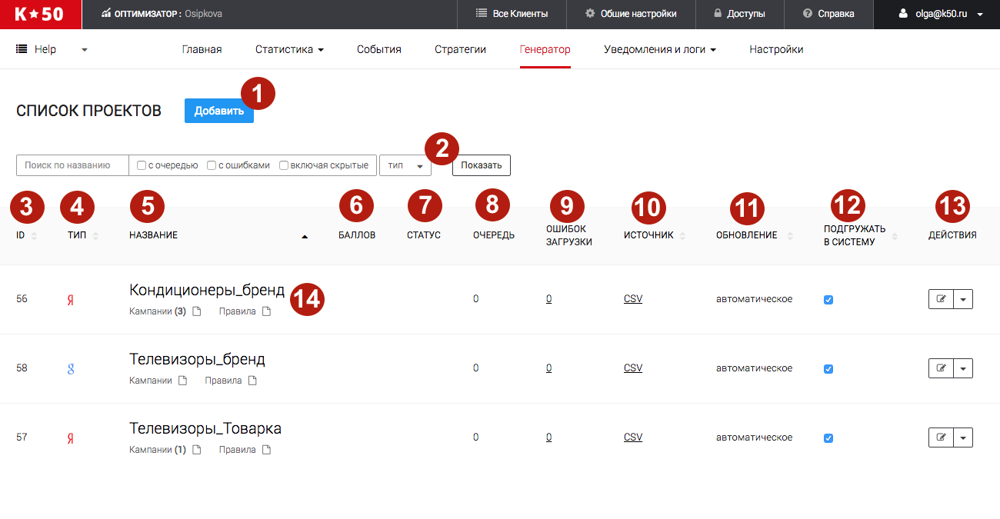

В данный момент сервисы К50:Генератор в процессе переезда на новый дизайн. Данная статья актуальна не для всех клиентов. Если вы не нашли ответ на свой вопрос, обратитесь к старой справке
Навигация по разводящей странице со списком проектов

Для добавления нового проекта нажмите "Добавить проект"
Обратите внимание
Не все тарифы позволяют работать с несколькими проектами!
В данном поле можно осуществлять поиск по названию проекта, а также найти проекты:
- с очередью
- с ошибками
- скрытые
Также возможен поиск по типу проектов (Яндекс.Директ - Google AdWords)
Числовой идентификатор проекта в К50:Генератор
Рекламная система, в которую проект загружает кампании. Яндекс.Директ - Google AdWords
Название проекта в К50:Генератор. Должно быть уникальным для всего списка проектов.
Количество баллов которое осталось на аккаунте в Яндекс.Директ
Статус проекта. Здесь будет отображаться информация об ошибках при загрузке кампаний в рекламный аккаунт.
Количество объявлений которое стоит в очередь на выгрузку в аккаунт.
Количество ошибок при попытке загрузки из Генератора в аккаунт Яндекс.Директ
Формат фида, на основе которого происходит генерация кампаний в проекте. К50 работает с тремя форматами:
- YML
- CSV
- Таблица создаваемая в интерфейсе
Подробнее про форматы фидов и требования к ним читайте в это статье
Обновление проекта может быть автоматическим или ручным.
- Автоматическое - проект обновляется с заданной периодичностью
- Ручное - проект не обновляется, если вы не нажали на "Обновить фид"
Если галочка стоит, то происходит автоматическая загрузка обновлений в рекламные системы.
Доступные действия по управлению фидом:
- Обновить фид - подгрузить все новые изменения в фиде и сформировать очередь на загрузку в рекламную систему. После обновления фида на месте этой кнопки появится "Загрузить". Сформированная очередь будет загружаться в рекламную систему.
- Ревизии
- Ревизи с ошибками
- Остановить - остановка загрузки кампаний в рекламную систему
- Копировать - копирование проекта. При копировании не будут копироваться кампании проекта и правила проекта.
- Удалить - удаление проекта.
По клику на название проекта вы попадете на страницу редактирования проекта.
Кампании (х) - количество кампаний в этом проекта
Правила - все правила созданные внутри этого проекта. Подробнее про правила читайте в это статье